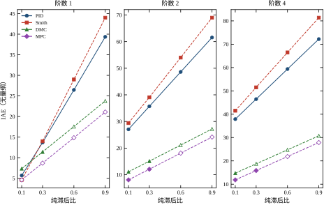
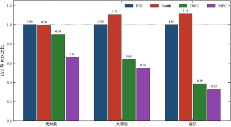
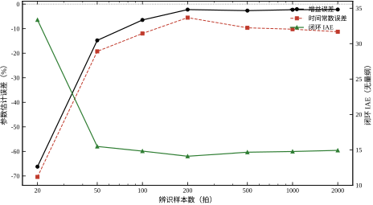
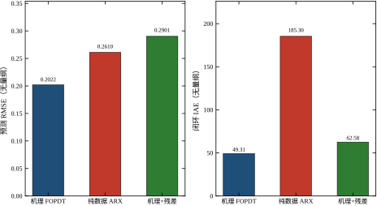
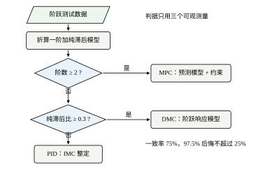
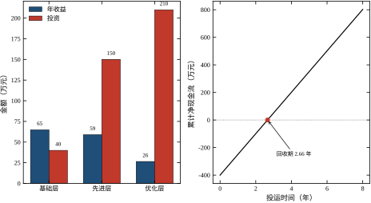

全书到这里已经走完 114 章。前面的章节按对象、信号、算法、实现四层展开，每一层都给了模型、算法与工程细节；读者如果从头读到尾，手里会积累几十种方法、上百个参数。这些方法在各自的章节里都讲得通，放在一起却容易让人产生一个错误印象：后面的方法比前面的强，复杂的方法比简单的好。
本章要做的事正好相反：把方法摆到同一张桌子上，用同一批对象、同一套口径、同一组摄动重新比一次，看看“谁更强”这个问题在多大程度上是个伪问题。结论先放在这里：大多数时候不存在更强的控制器，只存在更匹配的控制器；而“匹配”取决于三件事——对象形态、模型可信度、以及你愿意为维护付出多少。
本章是全书最后一章，也是第九部分的第二篇。第 114 章解决“怎么量”，本章解决“量完以后怎么选、怎么用、还剩下什么没解决”。
给控制方法画一张全景图，至少有三种画法，每种画法回答的问题不一样。
第一种按年代画：PID（1940 年代）→ Smith 预估（1950 年代）→ 状态空间与最优控制（1960 年代）→ 预测控制（1970 年代末）→ 鲁棒控制（1980 年代）→ 学习控制（2010 年代以后）。这张图好看，但它暗示了一条“不断进步”的直线，容易让人以为老方法是新方法的粗糙版本。事实不是这样：PID 至今占工业回路九成以上，不是因为现场保守，而是因为它在大多数回路上够用，且维护成本最低。
第二种按数学工具画：频域方法、根轨迹方法、状态空间方法、优化方法、学习方法。这张图适合课程安排，不适合现场决策；现场工程师不会问“这是频域还是时域”，只会问“这套东西要几个模型参数、要不要在线求解、出错时怎么退回手动”。
第三种按信息条件画：每个方法需要什么模型、需要多少在线计算、能处理什么约束、模型错了会怎样。本章采用第三种。因为工程选型的本质是信息与代价的权衡，而不是数学工具的偏好。表 115-1 先把四类方法的“信息账单”列出来。
表 115-1 四类方法的输入条件与失效方式
| 方法 | 需要的模型 | 在线计算 | 约束处理 | 模型失配时的表现 |
|---|---|---|---|---|
| PID | 三个数（K、\tau、\theta）或干脆不要 | 一次乘加 | 只能靠限幅与抗饱和 | 变慢或振荡，通常仍有界 |
| Smith 预估 | 同一组三个数，且要求较准 | 一个并联模型 | 同 PID | 模型偏差直接进入反馈通道 |
| DMC | 一条阶跃响应曲线（20–60 点） | 一个小型最小二乘 | 可在优化中加约束 | 预测偏差被当成真实偏差 |
| MPC | 阶跃响应或状态空间模型 | 每步一个 QP | 约束、多变量、经济目标 | 优化结果可能激进甚至失稳 |
表 115-1 的最后一列是本章的重点。前四列在各自的章节里都讲过，最后一列只有把方法放在同一批摄动对象上才看得出来。
四类方法看起来差别很大，拆开看却是同一个骨架：用某种东西预测未来，用预测与目标的差决定当前动作。
设当前时刻为 k，预测步长为 P，第 j 步的预测输出记为 \hat{y}(k+j\mid k)，则几乎所有模型型控制器都在解同一个问题：
\min_{\Delta u(k),\dots,\Delta u(k+M-1)}\ \sum_{j=1}^{P}\bigl[\hat{y}(k+j\mid k)-r\bigr]^2+\lambda\sum_{i=0}^{M-1}\Delta u^2(k+i) \tag{115-1}
式 (115-1) 里真正决定方法性格的是三样东西：预测器 \hat{y} 怎么来、控制步数 M 取多大、权重 \lambda 取多大。DMC 与 MPC 的差别常常不在结构，而在这三个数的取法（见第 58、80 章）。
PID 也可以塞进这个框架：取 P=1、M=1、预测器为“输出不变”，式 (115-1) 退化成“把当前误差按比例分摊”，再把分摊系数拆成比例与积分两项，就是标准 PID。它的“模型”不在控制器里，而藏在整定规则里——IMC-PI 的 K_c=\tau/[K(\lambda+\theta)] 就是一条把模型参数翻译成增益的公式（见第 44、106 章）。
Smith 预估走的是另一条路：把模型搬到回路外面，用模型输出抵消对象的纯滞后，让反馈看到的是一条“没有延迟”的等效对象。它的预测器是显式的，但优化问题不存在，所以它能处理延迟，不能处理约束（见第 47、107 章）。
这样看，四类方法的差别可以压缩成一句话：模型站在什么位置。 PID 把模型压缩进三个整定公式；Smith 把模型并联在回路外；DMC 与 MPC 把模型放进优化问题的预测器里。模型站得越靠前，性能上限越高，对模型准确度的依赖也越强。
下面开始摆数字。为了让四种方法处在同一信息条件下，算例做了三条约定。
第一，所有对象都由等时间常数串联构成，时间常数统一取 \tau=20 s，纯滞后按比例 \theta/\tau\in\{0.1,0.3,0.6,0.9\} 生成，阶数取 1、2、4，共 12 个对象。
第二，四个控制器都只用对象的阶跃响应或 FOPDT 参数：PID 用 IMC-PI 整定，Smith 用同一个 FOPDT 模型，DMC 用 M=5、\lambda=1.0，MPC 用 M=3、\lambda=0.1。DMC 与 MPC 的差异只体现在这两个数上，不额外给它任何对象信息。
第三，仿真步长 0.5 s，时长 300 s，设定值为单位阶跃，控制量限幅 \pm20，性能用 IAE 度量：
J_{\mathrm{IAE}}=\int_0^{T}\bigl|r-y(t)\bigr|\,\mathrm{d}t \tag{115-2}
表 115-2 是 12 个对象上的标称 IAE。星号先不看，本节只看数字。
表 115-2 十二个对象的标称 IAE
| 对象 | 阶数 | 纯滞后比 | PID | Smith | DMC | MPC |
|---|---|---|---|---|---|---|
| O1-0.1 | 1 | 0.1 | 5.69 | 4.61 | 7.33 | 4.61 |
| O1-0.3 | 1 | 0.3 | 13.68 | 14.00 | 11.40 | 8.68 |
| O1-0.6 | 1 | 0.6 | 26.46 | 29.00 | 17.55 | 14.85 |
| O1-0.9 | 1 | 0.9 | 39.35 | 44.00 | 23.79 | 21.10 |
| O2-0.1 | 2 | 0.1 | 27.04 | 29.40 | 11.09 | 8.05 |
| O2-0.3 | 2 | 0.3 | 35.68 | 39.07 | 15.10 | 12.06 |
| O2-0.6 | 2 | 0.6 | 48.62 | 54.00 | 21.12 | 18.09 |
| O2-0.9 | 2 | 0.9 | 61.54 | 68.97 | 27.19 | 24.15 |
| O4-0.1 | 4 | 0.1 | 37.89 | 41.50 | 14.74 | 11.85 |
| O4-0.3 | 4 | 0.3 | 46.47 | 51.50 | 18.74 | 15.85 |
| O4-0.6 | 4 | 0.6 | 59.36 | 66.48 | 24.74 | 21.85 |
| O4-0.9 | 4 | 0.9 | 72.19 | 81.35 | 30.74 | 27.86 |
表 115-2 里有四个可以直接读出来的规律。
第一，滞后比是最强的单一因素。同一阶数下，纯滞后比从 0.1 涨到 0.9，PID 的 IAE 涨了约 6 倍（5.69 到 39.35），MPC 涨了约 4.6 倍（4.61 到 21.10）。所有方法都怕滞后，只是怕的程度不同。
第二，阶数对 PID 的打击最大。纯滞后比为 0.1 时，阶数从 1 升到 4，PID 的 IAE 从 5.69 涨到 37.89，涨了 5.7 倍；同样条件下 MPC 只从 4.61 涨到 11.85，涨了 1.6 倍。原因是高阶对象的高频段衰减更快，PID 想快就必须把带宽推高，推高就撞上相位不足；模型型控制器可以“提前知道”高阶动态，不必靠高增益硬顶。
第三，MPC 在全部 12 个对象上 IAE 最低，这一点不意外：它用的是最激进的权重（\lambda=0.1）。但要注意，这个“最低”是用控制量换来的——表 115-2 只统计了偏差，没有统计阀门动作。
第四，本套 Smith 实现没有占到便宜。除了 O1-0.1 略优于 PID（4.61 对 5.69），其余 11 个对象上都不如 PID，大滞后对象上差距更大（O1-0.9：44.00 对 39.35）。这与教科书印象相反，原因在实现细节：算例中的 Smith 没有加设定值滤波器，也没有扰动观测器，模型稍有偏差时补偿项本身就成为误差源。第 47、107 章给出的完整结构包含这两部分，读者不应把本节数字理解为“Smith 无效”，而应理解为“Smith 的收益依赖模型精度，模型不准时它连 PID 都不如”。
图 115-1 把表 115-2 画成了三张小图：每个阶数一张，横轴是纯滞后比，纵轴是 IAE，四条线对应四个方法。

图 115-1 中方框、三角、菱形记号的含义稍后解释，先看线的形状。四条线的斜率差别很清楚：PID 与 Smith 几乎是两条平行上升的陡线，DMC 与 MPC 上升平缓。这说明滞后比增大时，模型型方法的相对优势在扩大——不是因为它们更“聪明”，而是因为它们能提前 P 步看到滞后的到来，PID 只能等误差出现。
再看阶数的影响。三张图的纵轴范围相同，阶数从 1 涨到 4 时，四条线整体都上移，说明所有方法在高阶对象上都变差；但上移幅度差得很远，PID 在纯滞后比 0.1 处从 5.69 涨到 37.89，涨了 5.7 倍，MPC 只从 4.61 涨到 11.85，涨了 1.6 倍。这个差距是本节最值得记住的现象：它意味着“高阶对象更难控”这句话对无模型方法几乎成立，对模型型方法只成立一半——高阶确实增加了难度，但也提供了更多可利用的结构信息。第 58 章讲过预测控制对模型阶数的敏感性，这里给出了一个量化的侧面。
标称成绩只说明“模型对的时候能跑多快”。现场更关心的是另一半：模型不那么对的时候，它会不会翻车。
算例的做法是：控制器只在标称对象上整定一次，随后原封不动地搬到三个摄动工况上——增益乘以 1.3、纯滞后乘以 1.3、时间常数乘以 1.3。控制器内部仍然相信原来的模型，这正是现场最常见的情形：整定完几年不动，对象早就变了。
合格的判据取三条同时成立：
\text{闭环有界},\qquad \sigma\le 30\%,\qquad T_v=\sum_k\bigl|u(k)-u(k-1)\bigr|\le 60 \tag{115-3}
式 (115-3) 的第二条限制超调，第三条限制阀门总行程。只看得 IAE 会奖励“猛打猛冲”的控制器，加上 T_v 才能把执行器代价算进去。图 115-1 中的实心记号表示四工况全部通过，空心记号表示至少一个工况不合格。
表 115-3 四工况下的最坏表现与通过对象数
| 方法 | 最坏超调 | 出现工况 | 最坏 T_v | 失败工况数 | 四工况全过对象 |
|---|---|---|---|---|---|
| PID | 23.90% | 增益 +30%，O1-0.3 | 4.27 | 0/48 | 12/12 |
| Smith | 22.87% | 增益 +30%，O1-0.1 | 10.42 | 0/48 | 12/12 |
| DMC | 47.19% | 滞后 +30%，O1-0.9 | 46.88 | 11/48 | 5/12 |
| MPC | 420.36% | 滞后 +30%，O1-0.9 | 1396.73 | 12/48 | 4/12 |
表 115-3 的结果和表 115-2 正好反过来。标称 IAE 最低的 MPC，在摄动下最脆；标称 IAE 最高的 PID，在摄动下最稳。这不是巧合，而是结构的必然，机制可以拆成三步。
第一步，对象增益实际涨了 30%，控制器内部的模型仍然认为增益是 1.0。对 PID，这意味着闭环增益比设计值高 30%，回路变快、相位裕度变小，但反馈是即时的，误差一出现增益就自动回落，所以最坏超调只有 23.90%。
第二步，对 DMC 与 MPC，增益误差直接进入预测器。控制器算出的 \Delta u 偏大 30%，而它并不知道自己算大了，因为预测输出与实测输出之间的偏差要等一个纯滞后才显现。滞后越大，这个“盲区”越长。
第三步，\lambda 决定控制器对这个盲区的容忍度。DMC 取 \lambda=1.0，动作保守，最坏超调 47.19%；MPC 取 \lambda=0.1，几乎不惩罚控制量变化，于是出现 420.36% 的超调和 1396.73 的总行程——这已经不能叫性能下降，而是接近失稳。
必须把这个结论的边界说清楚。420% 的超调有很大一部分是 \lambda=0.1 这个激进选择造成的，不是 MPC 结构本身的宿命；把 \lambda 提到 1.0，MPC 就会退化成与 DMC 相近的保守形态。第 58 章做过 \lambda 扫描，第 80 章讨论过学习增强的预测控制如何补偿模型误差，两处都指向同一个结论：预测控制的鲁棒性不在结构里，在权重和约束里。
反过来也要说清楚 PID 的代价。它之所以稳，是因为它根本不打算跑快：IMC-PI 的闭环时间常数取 \lambda=\theta，天生留了余量。如果把 PID 调到与 MPC 相同的标称 IAE，它的超调与 T_v 同样会上去，鲁棒余量同样会被吃掉。表 115-3 比较的不是“强控制器”与“弱控制器”，而是“留了余量的设计”与“没留余量的设计”。
把 §115.1.3 与 §115.1.4 放在一起，可以得到三条推论。
第一，标称性能排序与鲁棒排序不一致，所以单指标排名一定会骗人。 这与第 114 章的结论是同一件事的两面：第 114 章说排名要统一口径与裕度，本章说统一裕度之后排名会翻转。任何一份只给标称 IAE 的对比报告，都不足以支撑选型决策。
第二，方法选择本质上是“你愿意为性能付多少模型维护成本”。 PID 几乎不需要维护，代价是性能上限低；DMC 与 MPC 的上限高，但它们要求模型持续可信，模型漂移后必须有重新辨识的机制。一个没有辨识计划的 MPC 项目，投用两年后的实际性能往往不如一条认真整定的 PID——第 113 章讲过这个退化过程。
第三，混合是常态，不是妥协。 现场常见的是“底层 PID 打底、上层 MPC 卡边”：PID 负责快速回路与安全兜底，MPC 负责多变量协调与约束优化。第 112 章的四层结构讲的就是这种分工。把它看成“先进方法取代落后方法”是误读，看成“不同时间尺度上的不同工具”才对。
三条推论合起来，就是本节标题那句话。接下来要做的是把这个判断变成可执行的流程，这正是 §115.4 的任务；而在那之前，需要先把四层框架重新过一遍，看看这四类方法各自站在哪一层。
前面的比较都只用 IAE，这会让讨论失真。阀门动作是有代价的：执行器磨损、气源消耗、噪声、甚至工艺波动。把代价折算进目标，排名就会变。
最简化的折算是给控制量总行程加一个权重：
J_w=\frac{J_{\mathrm{IAE}}}{J_{\mathrm{IAE,PID}}}+w\,\frac{T_v}{T_{v,\mathrm{PID}}} \tag{115-6}
式 (115-6) 用 PID 做归一化基准，w 是“一单位相对阀门行程”值多少“一单位相对 IAE”。w=0 时退化成纯 IAE 比较，w 越大越看重执行器。
用表 115-5 的数据算一遍。快对象上，MPC 的 IAE 比是 0.663，T_v 比是 3.99；大滞后对象上分别是 0.550 与 11.32；高阶对象上是 0.327 与 13.55。
取 w=0.05，三个对象的 J_w 分别是 0.862、1.116、1.004。此时 MPC 在快对象与高阶对象上仍优于 PID，在大滞后对象上已经输给 PID。取 w=0.10，三个值变成 1.062、1.682、1.682，MPC 在三个对象上全部输给 PID。
这个计算说明两件事。第一，“MPC 更好”这个结论对 w 极其敏感，w 从 0.05 变到 0.10，结论就整体翻转。第二，翻转的顺序有规律：先翻的是阀门动作最剧烈的对象（大滞后），后翻的是动作温和的对象（快对象）。这与直觉一致——滞后越大的对象，控制器越容易“过度补偿”。
w 取值没有普适标准，它取决于阀门类型、动作频次、工艺对波动的容忍度。工程上的做法是先按设备维护记录估一个量级，再在方案评审时做敏感性分析。把 w 当成可调参数公开讨论，比假装它不存在要好。
方法全景这张图容易被读成三种错误的结论，这里逐一纠正。
第一个误读：MPC 一定比 PID 好。 表 115-2 支持这个印象，因为 MPC 的 IAE 在每个对象上都最低。但表 115-3 与式 (115-6) 都说明，这个优势建立在两个前提上：模型可信、动作代价不敏感。前提不成立时，MPC 的优势会消失甚至反转。正确的说法是“MPC 的上限更高”，而不是“MPC 更好”。
第二个误读：Smith 预估只适合大滞后。 更准确的说法是“Smith 适合模型准且滞后大的场合”。本算例里 Smith 在大滞后对象上反而最差，原因是模型有偏差，补偿项把偏差放大了。滞后大只是必要条件，模型准才是充分条件。第 47 章推导 Smith 结构时强调过“模型与对象并联”，这句话的潜台词就是“模型必须准”。
第三个误读：越复杂越鲁棒。 表 115-3 直接否定了这一点：复杂度最高的 MPC 在摄动下最脆。鲁棒性来自余量，而余量来自保守的设计选择（低带宽、大 \lambda、慢闭环），与结构复杂度没有必然关系。事实上，复杂结构要维护的假设更多，任何一个假设失效都会变成新的脆弱点。
三个误读有一个共同的根源：把“标称最优”当成了“普遍最优”。这也是本章反复要纠正的思维习惯——任何排名都要问一句“在什么条件下”。
本章的比较对象不是一个装置，而是十二个乃至四十个对象的集合。这个选择值得解释一句，因为它决定了本章所有结论的形态。
单个案例的写法更好看：选一个对象、画两条曲线、指出谁超调更小，故事完整、图也漂亮。但它有一个致命缺陷——对象是挑出来的。 只要换一个对象，赢家就可能换人，而读者无从判断这次换人是偶然还是必然。表 115-5 里 Smith 在大滞后对象上比 PID 差 10.6%，如果只拿快对象做案例，Smith 看起来几乎与 PID 打平；只拿高阶对象做案例，Smith 又变成最差的一个。三个案例都真实，三个结论都片面。
对象族的写法不好看：只能给分布、给通过率、给后悔值，没有一个“谁最强”的干脆答案。但它把选择权交还给了读者——读者看到的是“在纯滞后比 0.9、阶数 1 的对象上 MPC 最省 IAE”，而不是“MPC 最强”。前者可以对着自己的装置核对，后者只能相信。
代价也是实在的。对象族要求所有方法在同一批对象上跑完，算力开销是单案例的十几倍；报告里要写清抽样区间与随机种子，篇幅增加；结论必须以条件句表述，读起来不如断言痛快。本章选择承担这些代价，是因为全书讲了一百多章的方法，如果最后给出一个“某方法最好”的断言，前面所有的条件分析就都白做了。
本书开篇在 §0.3.3 给出过一个四层框架：对象层、信号层、算法层、实现层。当时的说法是，四层不是四个步骤，而是四个必须同时成立的假设。走到全书结尾，这句话需要加一个注脚：四层不仅描述控制问题的结构，也描述控制方法的依赖结构。
表 0-4 把四层与章节对应起来，那张表回答的是“出了问题该查哪一章”。本节要问一个不同的问题：同一层出问题，不同方法的反应有什么不同？ 这个问题的答案决定了选型，也决定了投用后该怎么维护。
先回忆四层各自的核心问题。对象层：被控量随控制量怎么变，哪里不确定。信号层：用什么测、多久测一次、噪声多大。算法层：根据误差算出什么控制量。实现层：算得完吗、执行器跟得上吗、出错怎么办。
四层之间存在明确的优先级：越靠上的层出错，越难被下层修正。PID 参数调得再好，也补不回一个没被建模的 10 s 纯滞后；滤波器设计得再精细，也救不回一个已经混叠的采样序列。这个优先级在选型时有一个直接推论：方法越复杂，它假设的上层信息越多，因此它的失败模式越靠近上层。
把四层当成四个假设，每一层就有一份必须被证明的责任。工程上常见的失败，多半是某一层没人去证明，于是默认它成立。
对象层的证明责任是“模型误差有界”。这句话不是要求模型精确，而是要求知道误差有多大、在哪个方向。FOPDT 近似一个三阶对象，增益误差 5%、时间常数误差 20% 是可以接受的，前提是你知道这个量级；如果不知道，整定时就无法留出对应的余量。
信号层的证明责任是“信息没有被破坏”。采样频率是否满足抗混叠要求，量化位数是否够，滤波器的相位滞后是否被算进了回路延迟。第 84 至 93 章讲过大量案例，其中最常见的一类是把滤波器相位当成“没影响的延迟”，结果整定出来的回路在实际投用时振荡。
算法层的证明责任是“结构与指标匹配”。对象有大滞后却用普通 PID，是结构不匹配；有硬约束却用只靠限幅的控制器，也是结构不匹配。第 37 至 83 章讲的都是这一层。
实现层的证明责任是“最坏情况下仍然安全”。计算超时怎么办、执行器饱和怎么办、传感器坏值怎么办、操作员切手动怎么办。这一层的责任最容易被低估，因为它平时不显形，只在异常时出现。
四份责任里，前三份决定“能跑多好”，第四份决定“会不会出事”。选型时如果把注意力全放在前三份，项目验收会很漂亮，投用半年后可能出一次事故。
把四类方法对照四层，会看到一张很不对称的表。
表 115-4 四类方法对四层的依赖强度
| 方法 | 主要落脚层 | 对象层依赖 | 信号层依赖 | 实现层依赖 | 典型失效层 |
|---|---|---|---|---|---|
| PID | 算法层 | 低 | 中 | 中 | 对象层（参数漂移） |
| Smith 预估 | 算法层 | 高 | 中 | 低 | 对象层（模型偏差） |
| DMC | 对象层 + 算法层 | 高 | 中 | 高 | 对象层（增益漂移） |
| MPC | 对象层 + 算法层 + 实现层 | 很高 | 高 | 很高 | 实现层（求解超时、约束冲突） |
这张表解释了三件事。
第一，PID 的失效几乎总在对象层。 它的算法不依赖模型，实现也简单，所以当回路表现变差时，最先要查的是对象有没有变——换热器结垢、阀门特性变化、催化剂失活。第 114 章讲回路性能评估，评的就是这件事。
第二，Smith 与 DMC 的失效也在对象层，但机制不同。 Smith 把模型并联进回路，模型偏差直接成为反馈误差，所以它对增益误差比对延迟误差更敏感；DMC 把模型放进预测器，模型偏差先影响预测、再影响控制量，中间隔了一个纯滞后，所以它的失效更隐蔽——等你看到超调时，控制器已经错了好几步。
第三，MPC 多了一个失效层。 它不但要求模型可信，还要求每个控制周期内优化问题能解出来、解出来的结果在执行器能力范围内、约束之间不冲突。第 112 章讲过的“约束打架导致求解不可行”，就属于实现层失效，和模型准不准没有关系。
表 115-4 的“典型失效层”一列是选型时最该看的一列。它告诉你：这套方法一旦出问题，你该派谁去现场。派错人，问题就会被拖成“这套先进控制不好用”的结论。
四层框架还有一个动态版本：同一个对象上，逐层加方法，看收益怎么变。算例选三个典型对象，依次套用 PID、Smith、DMC、MPC，结果如表 115-5。
表 115-5 三个对象上的复杂度阶梯
| 对象 | 方法 | IAE | 超调（%） | T_v | 相对上一级 | 相对 PID |
|---|---|---|---|---|---|---|
| 快对象 | PID | 11.567 | 9.72 | 2.49 | — | — |
| 快对象 | Smith | 11.500 | 0.00 | 2.19 | 0.6% | 0.6% |
| 快对象 | DMC | 10.383 | 0.91 | 4.27 | 9.7% | 10.2% |
| 快对象 | MPC | 7.663 | 6.88 | 9.93 | 26.2% | 33.8% |
| 大滞后 | PID | 30.752 | 5.68 | 0.88 | — | — |
| 大滞后 | Smith | 34.000 | 0.00 | 0.09 | −10.6% | −10.6% |
| 大滞后 | DMC | 19.622 | 1.37 | 4.29 | 42.3% | 36.2% |
| 大滞后 | MPC | 16.920 | 6.77 | 9.96 | 13.8% | 45.0% |
| 高阶 | PID | 79.723 | 4.90 | 0.97 | — | — |
| 高阶 | Smith | 88.834 | 0.00 | 0.80 | −11.4% | −11.4% |
| 高阶 | DMC | 30.719 | 3.51 | 5.60 | 65.4% | 61.5% |
| 高阶 | MPC | 26.039 | 1.95 | 13.14 | 15.2% | 67.3% |
先定义“相对上一级”这个量，后文反复要用：
\eta=\frac{J_{\text{上一级}}-J_{\text{本级}}}{J_{\text{上一级}}}\times 100\% \tag{115-4}
表 115-5 可以读出三个层次的信息。
第一，收益递减出现在同一对象内部。 大滞后对象上，PID 到 DMC 一步拿走 42.3%，DMC 到 MPC 只剩 13.8%；高阶对象上，第一步 65.4%，第二步只剩 15.2%。这是典型的边际递减：模型型方法的主要收益来自“第一次把模型放进去”，此后再换更复杂的结构，拿到的只是剩余空间的一小部分。
第二，收益大小取决于对象难度。 快对象上全套升级只换来 33.8%，大滞后 45.0%，高阶 67.3%。同一个方法在不同对象上的价值差了一倍，这说明“要不要上先进控制”这个问题不能脱离对象回答。
第三，代价单调上升。 快对象上，T_v 从 PID 的 2.49 涨到 MPC 的 9.93，接近 4 倍；高阶对象上从 0.97 涨到 13.14，超过 13 倍。IAE 的改善和阀门磨损的增长是同时发生的，而后者在验收报告里通常不出现。
图 115-2 把表 115-5 画成了三组柱：每组四根，高度是相对 PID 的 IAE 比。

图 115-2 的读法是看柱子的“台阶”形状。快对象那一组的台阶很浅，四根柱子几乎一样高，说明加复杂度几乎不划算；高阶那一组的台阶很陡，最后一根只有第一根的 0.33，说明复杂度花得值。这张图可以直接当选型的第一个筛子：如果台阶很浅，就不要往上走。
四层框架最有用的地方，是它能把“调不好”翻译成“哪一层被跳过了”。工程上反复出现的错配只有四种。
第一种，对象层缺失，却在算法层找补。 对象实际有 8 s 纯滞后，辨识时只记了 2 s，整定时按 2 s 留余量，投用后振荡；于是现场把增益一降再降，最后回路慢得无法交差。正确做法是回到对象层重测延迟，而不是继续在增益上找平衡。第 16 章讲过辨识实验的设计，第 47 章讲过延迟补偿，两处指向同一个动作：先测准，再设计。
第二种，信号层缺失，却在算法层找补。 测量噪声大，于是在反馈通道加低通滤波；滤波阶数越加越高，相位滞后越积越多，回路开始低频振荡；于是再降增益。这是一个自我强化的循环，最后回路既慢又抖。正确做法是回到信号层：查噪声来源、改取样位置、提高采样率，而不是用滤波器把噪声“藏”起来。
第三种，算法层缺失，却在实现层找补。 对象有硬约束（阀门开度、压力上限），控制器却只靠限幅；限幅一动作，积分就饱和，退饱和要靠操作员手动干预。这类问题的特征是“平时正常、一到大扰动就出问题”，因为约束只在极端工况下才被触发。正确做法是把约束写进算法，这正是 MPC 相对 PID 的核心优势（见第 58 章）。
第四种，实现层缺失，却在算法层找补。 控制器算得太慢，一个周期算不完，于是把预测步长从 40 砍到 10，性能下降；或者把优化问题简化成解析解，约束处理能力随之消失。这类问题常出现在把算法从仿真搬到 PLC 的过程中，第 86 章讲过实时性预算的算法。
四种错配有一个共同点：补救动作都发生在比问题更靠下的层。 这也是为什么四层框架要强调“自上而下排查”——不是因为上层更重要，而是因为下层的补丁会掩盖上层的病灶，让问题在更晚的时候以更贵的方式出现。
需要给这个框架划一条边界。它能回答“为什么这套方法在这个装置上不灵”，能回答“该派谁去现场”，但它不能回答“这个项目值不值得投”。
值不值得投是经济问题，输入是 IAE 改善、投资额、回收期，输出是一个决策。四层框架在这里只能提供一个约束：任何投资方案都必须同时覆盖四层，否则收益会在某一层被吃掉。 只买软件不建模型，收益为零；只建模型不做维护，收益会在两年内衰减回原点；只做算法不考虑执行器，收益会被饱和削平。
§115.4 会把经济判断做成决策树，§115.6 会给出不同读者的使用建议。在那之前，还有一件更基础的事要处理：模型从哪里来。这直接决定了四层里最重要的那一层能不能成立。
把九个部分摊到四层上，会发现全书的编排本身就是这个框架的一次展开。
第一部分（建模、辨识与学习基础）对应对象层。它花了 22 章讲怎么从数据里得到模型、怎么判断模型可信，因为对象层决定性能上限，后面的所有设计都建立在这一层之上。第二、三部分（经典控制、现代控制）对应算法层，讲的是给定模型怎么设计控制律。第四、五部分（智能控制、前沿控制）是算法层的扩展，把学习、优化、鲁棒性引进来。第六部分（计算机控制）横跨信号层与实现层，讲采样、滤波、实时性、软件结构。第七、八部分（运动控制、过程控制）是四层的综合应用，对象不同，但分层不变。第九部分收口。
这个对应关系解释了一个常被问到的问题：为什么本书不按“经典—现代—智能”的传统顺序编？因为传统顺序是按算法层内部的流派排的，而本书按层排。按层排的好处是每一层都能独立成篇，读者缺哪一层补哪一层；坏处是同一层的章节跨度大，需要靠第 0 章的地图来导航。
下面这个案例是构造的，用于说明“层间错配”在实际项目里的样子，不对应任何具体装置。
某回路换了 MPC，投用三个月后 IAE 反而比原来的 PID 高 15%。项目组的第一个反应是调权重，把 \lambda 从 0.2 加到 1.0，IAE 降了一点，但仍高于 PID。于是又调预测步长，从 30 改到 20，再改到 40，结果在 40 时出现明显振荡。
按四层顺序查下去，问题分布在三层。
对象层：模型是在满负荷工况下辨识的，而装置有三分之一时间跑在 60% 负荷；低负荷段的增益比模型高 25%，MPC 的预测系统性偏低。
信号层：阀门有约 8% 的死区，控制量在死区内的变化不产生流量变化。PID 靠积分慢慢磨过去，MPC 则在死区边缘反复试探，T_v 大幅上升。
实现层：底层 PID 在自动与手动之间切换时没有做无扰切换，积分项残留导致切换瞬间有一个阶跃扰动，MPC 把它当成真实偏差去追。
三层问题叠加，表现就是“调什么都不对”。只调 \lambda 属于在算法层打补丁，掩盖不了另外两层。正确的处置顺序是：先修无扰切换（实现层，一天），再补死区补偿（信号层，一周），最后按负荷分段建模或加增益调度（对象层，一个月）。
这个案例的教训不是“MPC 不好用”，而是“MPC 把三层的问题都暴露出来了”。PID 时代这些问题也存在，只是被低带宽掩盖了——回路慢，死区和积分残留的影响就小。上先进控制之前先做一次四层体检，比投用后反复调参便宜得多。
上一小节的案例是从“三层同时出问题”倒推的。现场更常见的情形是：只知道现象，不知道该查哪一层。本小节按现象列一份清单，把每种典型现象先归到一层，再给一个最小的验证动作。
现象一，稳态残差消不掉。 先查信号层：变送器零点漂移、阀门死区、取样点位置不对，都会让积分项一直积累而输出不变。最小验证动作是切手动，把输出慢慢加一点，看测量值动不动；不动就是死区或卡涩，动但回不到设定值就是零点或量程问题。
现象二，周期性振荡，周期大约是纯滞后的四倍。 这是典型的增益过大，归属算法层。但先别急着降增益，要确认对象层的纯滞后估准了没有——滞后被低估 30%，整定时就会把增益放大，振荡是必然结果。最小验证动作是量一次真实的阶跃响应延迟，与辨识报告对照。
现象三，高频抖动，阀门一直在小幅动作。 归属信号层。来源通常是测量噪声、量化误差或滤波器截止频率太高。最小验证动作是看阀位指令的频谱，如果在采样频率的一半附近有峰，就是噪声进入了反馈通道。
现象四，大扰动后恢复很慢，或者干脆卡在某个值上。 归属实现层。限幅与抗饱和没做好时，积分项会在饱和期间积累到很大的值，退饱和要花很长时间。最小验证动作是复现一次大扰动，同时录下积分项的数值；如果扰动结束后积分项还在缓慢回落，就是这一条。
现象五，两条回路互相推，一条动另一条跟着动。 归属对象层，是耦合问题，不是整定问题。最小验证动作是算相对增益，或者做一次单回路阶跃、看另一条回路的响应幅度。
现象六，白天正常、夜班差，或者换批号后变差。 归属对象层，是工况变化导致模型失配。最小验证动作是把两个时段的数据分别做一次辨识，比增益与时间常数的差。差得大就该考虑增益调度，而不是继续调 PID。
现象七，改设定值超调很大，但抗扰很好。 归属算法层，是设定值加权或微分冲击的问题。最小验证动作是把设定值改成斜坡，看超调是否消失；消失就说明是设定值通道，而不是反馈通道。
现象八，投用前两周很好，之后慢慢变差。 归属对象层加管理流程，是模型漂移。最小验证动作是看性能指数的时间曲线，如果单调下降而没有外部扰动对应，就是模型在退化。
八条现象覆盖不了全部，但覆盖了绝大多数。用这张清单的顺序要注意：永远从“最小验证动作”入手，而不是从“最可能的层”入手。 因为最小验证动作只需要几分钟，而猜错层的代价是几天。这与医生先做血常规再决定拍不拍 CT 是一个道理。
清单还有一个用法：项目验收时逐条过一遍，把每条的现象与验证结果记下来。这样交付的不只是“回路能跑”，还有一份“哪些现象已经排除、哪些还留着”的记录。第 113 章讲投用验收时强调过留档，这份清单可以直接并进去。
这个框架在书里出现了十几次，用得越熟越容易走样。以下三种误用最常见，每一种都能在真实项目里找到对应。
误用一，把四层当成流水线的四步。 这种读法的典型说法是“我们先做辨识，再做算法，最后做实现”。听起来很顺，实际上会返工。原因是四层不是先后步骤，而是同时成立的假设：算法层的设计会反过来约束信号层的采样与滤波，实现层的算力会反过来约束预测步长，对象层的模型精度要求又取决于算法层打算用它做什么。先做对象层、再定算法层、最后才看信号层，往往会在最后一步发现滤波器截止频率把相位余量吃掉了，只能回头改整定。
正确的顺序是“先定目标，再同时估四层”。目标指的是要压到多少 IAE、允许多少阀门行程、允许多长的开发周期；有了目标，四层各自的余量就能同时分配。第 0 章强调四层“必须同时成立”，说的就是这个意思。
误用二，把四层当成重要性排序。 有人读成“越靠上越高级”，于是把预算全压在算法层，对象层的辨识只做一次快速阶跃。这个读法正好反了：对象层决定性能上限，而且是最便宜的一层。 本章的算例里，基础层投入 40 万元拿到 20.3% 的改善，先进层投 150 万元只拿到 18.4%，优化层投 210 万元拿到 8.3%。钱越往上投，边际收益越低。
层次之间没有价值高低，只有依赖方向。上层依赖下层成立，下层不因上层高级而变得不重要。§115.2.5 列的四种错配，本质上都是“在上层花钱、在下层欠账”。
误用三，把四层当成组织分工。 仪表专业负责信号层、算法组负责算法层、IT 负责实现层——分工本身没错，问题出在没人对接口负责。信号层交出的数据带不带工况标签、算法层要求的采样周期实现层能不能满足、对象层的模型精度算法层够不够用，这些跨层问题不属于任何一层的职责。
§115.2.8 那个三层叠加的案例就是分工的产物：仪表认为死区是机械问题、算法组认为模型不准、IT 认为切换逻辑是工艺要求，三方都没错，但回路就是不好。解决办法不是合并部门，而是明确一个角色对“层间契约”负责——通常是项目技术负责人。四层框架在管理上的价值，不是划分职责，而是逼着项目把接口写清楚。
三种误用有一个共同的根源：把框架当成分类工具，而不是检查工具。分类工具关心“这件事属于哪一层”，检查工具关心“这一层的假设还成立吗”。前者用来写报告，后者用来找问题。本章从头到尾用的是后者。
关于模型，工程界有两种针锋相对的做法，两种都能找到成功案例，也都能找到失败案例。
第一种是机理优先：从物料平衡、能量平衡、反应动力学出发，写出微分方程，再离散化。它的优点是外推能力强、参数有物理意义、可解释；缺点是建模周期长，而且很多环节（阀门特性、结垢、催化剂活性）根本写不出方程。
第二种是数据优先：不问机理，直接从历史数据里拟合一个黑箱模型，ARX、神经网络、树模型都行。它的优点是快、能吸收未建模因素；缺点是需要激励、外推能力差、模型系数没有物理含义。
两种极端的代价都可以量化。机理模型的代价是时间与专家，数据模型的代价是数据质量与覆盖范围。本节用一组算例把这两个代价放到同一张表上。
算例对象是一个三阶对象，时间常数总和 30 s，纯滞后 4 s，增益 1.2，采样 0.5 s。激励信号采用块状二元序列，每 40 拍换一次符号，幅值 0.5，叠加 0.005 的测量噪声。选用块状而不是逐拍白噪声，是因为逐拍切换的能量集中在高频，经过三阶低通后几乎衰减殆尽，辨识出的静态增益会严重失真——第 16 章讨论实验设计时讲过这条规律，本算例复现了同样的现象。
第一个问题是：多少数据才够。算例用 ARX(1,1) 辨识，样本数从 20 增到 2000，再用辨识结果按 IMC-PI 整定，结果如表 115-6。
表 115-6 样本数对参数估计与闭环性能的影响
| 样本数 | 增益估计 | 时间常数估计 | 增益误差（%） | 时间常数误差（%） | 闭环 IAE |
|---|---|---|---|---|---|
| 20 | 0.406 | 8.88 | −66.21 | −70.39 | 33.356 |
| 50 | 1.023 | 24.22 | −14.77 | −19.25 | 15.479 |
| 100 | 1.123 | 26.41 | −6.46 | −11.97 | 14.825 |
| 200 | 1.173 | 28.35 | −2.23 | −5.51 | 14.099 |
| 500 | 1.168 | 27.10 | −2.64 | −9.65 | 14.668 |
| 1000 | 1.172 | 26.94 | −2.29 | −10.21 | 14.769 |
| 2000 | 1.174 | 26.63 | −2.20 | −11.25 | 14.928 |
真值是增益 1.2、时间常数 30 s。表 115-6 有三段完全不同的行为。
第一段，20 个样本。增益估计只有真值的三分之一，时间常数估计不到三分之一，闭环 IAE 33.356，是最好情况的 2.4 倍。这个样本量下辨识结果基本不可用，原因很直接：块状激励的周期是 40 拍，20 个样本连一个完整周期都没走完，数据里没有任何低频信息。
第二段，50 到 200 个样本。增益误差从 −14.77% 收敛到 −2.23%，闭环 IAE 从 15.479 降到 14.099。这一段是“数据量换精度”的经典区间，投入产出比最高。
第三段，200 到 2000 个样本。增益误差基本不动（−2.2% 左右），时间常数误差反而从 −5.51% 涨到 −11.25%，闭环 IAE 从 14.099 微升到 14.928。这一段最能说明问题：样本再多，也买不到 ARX(1,1) 表达不了的东西。
为什么？因为对象是三阶加纯滞后，ARX(1,1) 只有一个极点和一个零点，它必须用“更慢的一阶”去近似“三阶加延迟”，这个近似在低频段必然偏低。样本越多，估计越精确地收敛到这个错误的结构上——误差不再来自随机性，而来自模型结构本身。第 18 章讨论最小二乘族时区分过参数误差与结构误差，表 115-6 给出了后者的具体高度。
图 115-3 把表 115-6 画成双纵轴：左轴是两条参数误差曲线，右轴是闭环 IAE。

图 115-3 的形状值得记下来。两条误差曲线在 200 个样本附近出现拐点，之后基本水平；IAE 曲线同步出现一个浅谷，之后略微回升。这个拐点不是“够用了”的信号，而是“数据量已经不是瓶颈”的信号——此后再加数据，只能让估计更精确地落在错误的模型结构上。
工程上的含义很清楚：辨识之前先定结构，再定数据量。 结构定错，数据白采；结构定对，200 个样本往往就够。第 16 章讲实验设计，第 18 章讲最小二乘族的模型结构，两章的结论在这里得到一个量化的注脚。
第二个问题是：机理模型、纯数据模型、两者混合，差别到底在哪。算例用 3000 个样本，前 2000 个辨识、后 1000 个验证，三种模型都用同一套 MPC 参数闭环，结果如表 115-7。
表 115-7 三种内部模型的预测与闭环表现
| 内部模型 | 预测 RMSE | 闭环 IAE | 超调（%） | T_v |
|---|---|---|---|---|
| 机理 FOPDT | 0.20217 | 49.309 | 22.19 | 74.22 |
| 纯数据 ARX(2,2) | 0.26097 | 185.297 | 111.33 | 52.34 |
| 机理 + 残差 ARX(1,1) | 0.29014 | 62.580 | 45.20 | 118.36 |
表 115-7 最刺眼的一行是中间那行。纯数据模型的预测误差只比机理模型高 29%（0.26097 对 0.20217），闭环 IAE 却高了 2.76 倍（185.297 对 49.309），超调从 22.19% 涨到 111.33%。预测精度的差距与闭环性能的差距不在一个量级上。
原因在于 RMSE 是个平均量，闭环却对特定频率敏感。纯数据模型在 200 拍处的阶跃响应为 0.991，真值是 1.195，低了 17%；而它的静态增益估计为 1.31，又高了 9%。两个误差方向相反，在对冲中把控制量的摆动放大：控制器一会儿以为“还差得远”而加码，一会儿又以为“已经到位”而回收。超调 111% 是这种摆动累积的结果。
还有一个更隐蔽的原因：ARX(2,2) 在辨识三阶对象时，会拟合出一个非常接近单位圆的极点（本例为 0.9926）。这类极点对应的时间常数长达数百拍，在 200 拍的预测窗口里几乎不衰减，相当于给控制器塞进一个“几乎积分”的模态。它在验证集上的 RMSE 表现不差，因为验证数据也在同样的工况附近；一旦闭环把它放到反馈回路里，这个模态就会与控制器的积分作用叠加，产生长周期振荡。第 19 章讨论过 ARX 在模型阶数不足时的极点偏移，本例是它的一个直观后果。
第三行更值得注意。机理加残差本来是为了“用数据补机理的短板”，结果预测 RMSE 反而升到 0.29014，闭环 IAE 升到 62.580。为什么补了还不如不补？
因为残差里剩下的主要不是可预测的系统偏差，而是未建模的高频动态与噪声。用 ARX(1,1) 去拟合残差，等于强迫一个一阶模型去解释一段宽带信号，它只能把其中最低频的那一点成分放大成一个慢模态，再叠加到机理模型上。结果机理模型的低频精度被这个慢模态破坏，高频部分又没有补上。
图 115-4 把表 115-7 的两列画成并排柱。

图 115-4 左图三根柱子差不多高，右图第二根是其余两根的三倍。并排看，这张图说的就是一句话：开环精度不是闭环性能的充分指标。 选模型时如果只比验证集 RMSE，很容易选出右图那根最高的柱子。
“模型驱动与数据驱动融合”这句话在文献里有四种具体形态，工程上的适用条件差别很大。
第一种，机理骨架加数据参数。方程结构由机理确定，参数（传热系数、反应速率常数）由数据估计。这是灰箱模型最常见的形式，优点是外推能力保留、参数可解释；缺点是需要先有可信的结构。第 20 章的子空间辨识与第 23 章的在线辨识都属于这一类。
第二种，机理模型加数据补偿。机理模型给出主预测，数据模型只预测残差。表 115-7 第三行就是这种形态。它的理论吸引力很强，但本算例说明：残差必须是“可预测的系统偏差”才值得补，如果残差主要是噪声与未建模高频，补偿反而有害。
第三种，数据模型加物理约束。用神经网络或树模型做预测，但把物料平衡、上下限、单调性作为约束或正则项写进去。这类做法在第 80 章的学习增强 MPC 里出现过，优点是数据少时也不会给出违反物理的结果；缺点是实现复杂，约束与网络训练的耦合容易出问题。
第四种，数据驱动整定。控制器结构不变（仍是 PID 或 MPC），只用手动数据或历史运行数据去优化参数。这是风险最低的一类融合，因为它不改变闭环结构，最坏情况只是参数不够好。第 106 章讨论过数据驱动的 PID 整定。
四种形态排下来，风险从低到高、收益上限也从低到高。工程上更稳妥的路径是先在第四种上拿到收益，再考虑第三种，前两种需要长期的数据与机理积累。
关于融合，本节持一个明确的立场：数据不能替代模型，它只能补充模型；而补充是否有效，取决于你是否知道模型错在哪。
这个立场有三条支撑。
第一，闭环性能由低频特性主导，而低频特性恰恰是数据最难辨识的部分。要辨识静态增益，激励信号必须在低频段有足够能量；工业装置又不允许长时间大幅值激励。所以数据模型在低频段天然不如机理模型，表 115-7 的 17% 阶跃响应偏差就是证据。
第二，模型的用途不只是预测，还包括解释与排查。当回路表现异常时，机理模型能告诉你“是哪个环节变了”，黑箱模型只能告诉你“预测不准”。第 114 章讲的性能评估要追根因，靠的是前者。
第三，融合的收益有上限。表 115-7 里最好的是纯机理模型，加了残差反而变差；这不是说融合无用，而是说融合的价值不在“更高的 RMSE 精度”，而在“覆盖机理写不出的环节”。如果机理已经把主要动态写清楚，融合的空间本来就很小。
第 15 章在全书开头就讨论过“什么时候值得用学习”，那里的判据是：机理不清、数据充足、误差可承受。本章的算例给这三条判据补了一组数字：机理不清时，纯数据模型的闭环 IAE 是机理模型的 3.8 倍；机理清楚时，加数据补偿反而让 IAE 升高 27%。两条都指向同一个结论——融合的成败取决于诊断，而不是取决于算法。
表 115-6 说明“数据量”不是一个独立的变量，它和“数据质量”绑在一起。同样 200 个样本，激励设计得好与不好，参数误差可以差十倍。工程上有三条经验值得记下来。
第一条，幅值要“看得见但不出圈”。 激励太小，信噪比不够，辨识结果被噪声主导；激励太大，会触发工艺上下限、影响产品质量。折中的做法是先估一个安全幅值，再在这个幅值下尽量延长激励时间。本书算例取的是稳态值附近的 \pm0.5（约 40% 的量程），这是仿真里的选择，现场通常只能取到 5% 到 10%。
第二条，频带要覆盖闭环带宽的两到三倍。 只激励低频，辨识不出快速动态；只激励高频，辨识不出静态增益。块状序列的好处是频谱集中在低频段，适合辨识增益与主导时间常数；如果要辨识高阶动态，需要用幅值渐变的扫频或多电平序列。第 17 章讲过非参数辨识的频带选择。
第三条，记录必须带工况标签。 同样是“阀位 45%”，满负荷和低负荷下的对象增益可能差 30%。没有工况标签的数据，辨识出来的模型是几个工况的平均，任何一个工况下都不准。这一点在 §115.2.8 的案例里已经出现过：低负荷段的增益比模型高 25%，就是平均化的后果。
三条经验合起来是一句话：辨识的瓶颈通常不在算法，而在“能不能做一次合格的实验”。 现场工程师的时间花在协调生产、申请窗口、核对标签上，远比花在跑最小二乘上多。这也解释了为什么“机理加少量数据”的灰箱路线在工业界更受欢迎——它对实验的要求最低。
既然模型会漂移（表 115-11），一个自然的想法是让模型自己跟着漂：用递推最小二乘在线更新参数，控制器始终用最新模型。这条路在理论上成立，工程上却有三个坑。
第一个坑，闭环辨识有偏。 控制器在回路里，输入信号与控制器的输出相关，而控制器又依赖过去的输出，噪声与回归量之间产生相关性，最小二乘估计不再无偏。第 21 章专门讨论过这个问题，解决办法是加外部激励或使用工具变量，两者都会干扰生产。
第二个坑，持续激励不足。 装置稳定运行时，控制量几乎不动，数据里没有新信息，递推算法会“漂”到某个随机方向。表现出来就是参数慢慢偏离，控制器行为变得不可预期，而趋势图上又看不出异常。
第三个坑，参数跳变与控制器切换的耦合。 在线辨识给出新参数后，控制器是立刻切换还是渐变？立刻切换会引起控制量跳变，渐变又会让控制器在很长一段时间里处于“半新半旧”的状态，两个模型都不匹配。
工程上的折中方案是“监测在线、辨识离线”：在线只监测几个关键指标（稳态增益、主导时间常数、振荡频率），一旦偏离阈值就报警，由工程师安排一次离线辨识。这样既拿到了漂移信息，又避免了在线辨识的偏差与不确定性。第 23 章讲过这类方案的实现细节。
本章的算例给这个方案提供了一个量化依据：表 115-11 中，DMC 在时间常数变化 40% 时 IAE 上升 77%，在滞后加增益双漂移时上升 716%。如果监测阈值设在“IAE 翻倍”，那么第一种工况还能撑，第二种工况早就该报警了。阈值定得越松，模型带病运行的时间越长。
辨识报告交上来，通常只有一张拟合曲线和一个 RMSE。这个信息量不够。本节给五条检查，都可以在半天内做完，且不需要额外实验。
检查一，看前三个时间常数的重合度，不只看 RMSE。 把模型与实测的阶跃响应叠在一张图上，只看 0 到 3\tau 这一段。这一段决定闭环的相位余量，重合不好，后面再准也没用。经验判据是这一段的最大偏差不超过稳态增量的 10%。表 115-7 里纯数据模型的 RMSE 只比机理模型高 29%，但前段的形状偏差远大于这个比例——RMSE 是全时段平均，它把最关键的上升段摊薄了。
检查二，静态增益要跨工况对一次。 至少取满负荷与低负荷两个工况各做一次阶跃，比较增益。差超过 15% 就不能用单一模型，要么分段建模，要么加增益调度。§115.2.8 的案例里差 25%，直接导致 MPC 三个月后 IAE 反超 PID。
检查三，查极点位置。 离散模型的极点如果落在 0.95 以外，就要警惕。本章纯数据 ARX(2,2) 拟合三阶对象时给出 0.9926 的极点，对应时间常数数百拍，在 200 拍预测窗口里几乎不衰减，等于凭空塞进一个积分模态。判别方法很简单：把极点取模排序，最大的那个若超过 0.95，就问一句“对象真的有这么慢的模态吗”。
检查四，增益误差与时间常数误差不能同号抵消。 这是最容易被忽略的一条。本章的纯数据模型在 24 拍处响应偏低 17%，静态增益偏高 9%——两个误差方向相反，在平均意义上互相抵消，RMSE 因此好看；但闭环里控制器一会儿以为“还差得远”而加码、一会儿以为“到位了”而回收，超调被放大到 111%。验收时必须把这两个误差的符号单独列出来，而不是只看它们的合成效果。
检查五，把模型放进闭环，扫一遍控制器参数。 用同一个模型、同一组权重，把 \lambda 从 0.1 扫到 2.0，看 IAE 是否单调。正常模型应该给出“\lambda 增大、IAE 单调上升、T_v 单调下降”的平滑曲线；如果中间出现跳变、或者某个 \lambda 下闭环直接发散，说明模型在高频段不可信。这一条不需要现场实验，纯仿真几秒钟就能跑完，却是最接近真实使用条件的一次检验。
五条检查的顺序有讲究：前四条在办公桌前就能做完，第五条要跑仿真。先做便宜的四条，把明显不合格的模型挡在闭环之外。 工程上最常见的错误是跳过前四条直接上闭环试，试出问题再回头怀疑整定——而问题其实在模型里，整定怎么调都是白调。
这五条也给“数据驱动”划了一条实践边界：数据可以拟合出任意精度的曲线，但一条曲线要变成可用的内部模型，必须通过上面这些结构化检查。精度是拟合出来的，可信是检查出来的，两者不是一回事。
选型讨论之所以经常吵不出结果，是因为参与者在用不同的输入。搞算法的人看对象阶数，搞仪表的人看执行器，搞项目的人看投资额，三方各说各话。本节先把输入统一成五个量，再谈规则。
表 115-8 选型的五个输入量
| 输入 | 取值方式 | 为什么重要 |
|---|---|---|
| 模型阶数 | 阶跃响应拟合，取整数 1–4 | 决定模型型方法有没有发挥空间 |
| 纯滞后比 | 纯滞后除时间常数 | 决定反馈能拿到多少相位余量 |
| 约束强度 | 有无必须遵守的变量上下限 | 决定要不要把约束写进算法 |
| 变量耦合 | 单回路还是多变量 | 决定要不要协调层 |
| 经济规模 | 年收益与投资额 | 决定复杂度是否值得 |
前四个是技术输入，第五个是经济输入。工程上最常见的错误是只用前四个做决定，把第五个留到“以后算”；结果是技术上最优的方案因为回收期太长被否，或者技术上够用的方案因为过度设计而浪费。
五个输入里，前两个可以从一条阶跃响应曲线读出来，第三个要问工艺，第四个要看流程连接，第五个要问财务。也就是说，选型所需的信息大部分在现场就能拿到，不需要额外的辨识实验。
把前两个输入做成规则，可以得到一棵极简的决策树：阶数不小于 2 选 MPC，否则若纯滞后比不小于 0.3 选 DMC，否则选 PID。图 115-5 把它画了出来。

这棵树只有两层判断，看起来过于简单。为了检验它，算例生成了 40 个随机对象：阶数 1–4，时间常数 12–50 s，纯滞后比 0.05–0.9，增益 0.8–2.2。对每个对象穷举四种方法，取 IAE 最小者为“最优”，再与决策树的推荐比较。
比较用后悔值（regret）度量：
\rho=\frac{J_{\text{推荐}}-J_{\text{最优}}}{J_{\text{最优}}}\times 100\% \tag{115-5}
后悔值为零表示推荐就是最优；为 28% 表示因为选错方法，多付了 28% 的 IAE。40 个对象的分布如表 115-9。
表 115-9 决策树在 40 个随机对象上的后悔值分布
| 后悔值区间 | 对象数 | 占比 | 说明 |
|---|---|---|---|
| 等于 0 | 30 | 75.0% | 推荐与穷举最优一致 |
| 0 至 10% | 5 | 12.5% | 选便宜了，代价可接受 |
| 10% 至 20% | 4 | 10.0% | 一阶对象被推荐为 DMC 或 PID |
| 20% 至 30% | 1 | 2.5% | 最快的一阶对象，后悔 28.62% |
| 大于 30% | 0 | 0.0% | 未出现 |
一致率 75.0%，平均后悔 2.90%，中位后悔 0.00%，最大后悔 28.62%，97.5% 的对象后悔值在 25% 以内。这组数字说明：一棵只有两层判断的树，在四类方法的选择上已经够用。
不过，75% 的一致率需要解释清楚，否则容易被误读为“树不够好”。看那 10 个不一致的对象，它们全部是阶数 1 的对象，而穷举最优几乎全是 MPC——因为本算例的 MPC 取 \lambda=0.1，在单指标 IAE 上天生占优。换句话说，不一致的根源是“最优”的定义太窄，而不是树的判断错了。
如果按 §115.1 的口径把阀门动作算进去，结论会反过来：一阶快对象上 MPC 的 T_v 是 PID 的 4 倍（表 115-5），多出来的 28% IAE 改善很可能不值这个执行器代价。所以表 115-9 的后悔值是上界，真实代价比它小。
后悔值这个量在选型讨论里很有用，因为它把“选错”换算成了可比的百分数。但它有三个读法上的坑。
第一个坑，后悔值依赖候选集。 本节候选集只有四类方法，如果加入模糊控制、自适应控制，最优值会变，后悔值随之变化。跨报告比较后悔值时必须确认候选集相同，这与第 114 章讲的“口径”是同一件事。
第二个坑，后悔值对单指标敏感。 本节只用 IAE，如果改用“IAE 加 T_v 加权”，最优方法会从 MPC 换回 DMC 或 PID，后悔值的分布也会变。工程上更稳妥的做法是用双指标画帕累托前沿，再看推荐点落在前沿的哪一段，第 114 章给过这个方法。
第三个坑，后悔值不区分方向。 选便宜了（IAE 略高但维护简单）和选贵了（IAE 略低但投资翻倍）在数值上可能一样。前者通常可接受，后者是浪费。读后悔值时要同时看选的是哪一边。
三个坑合起来是一句话：后悔值适合做粗筛，不适合做终判。 它的价值在于快速排除明显不合适的方案，把讨论集中到两三个候选上。
决策树只用阶数与滞后比，所以它必然漏掉一些重要情形。以下三类是工程上最常遇到的例外。
第一类，有硬约束的快速回路。 阶数 1、滞后比 0.1，按树应该选 PID；但如果这个回路有必须遵守的压力上限，PID 只能靠限幅，限幅一动作就饱和。此时应该选 MPC，即便它的标称 IAE 更高。约束强度是决策树的第三个输入，树里没有画，实际使用时必须补上。
第二类，强耦合的多变量对象。 每个回路单看都是一阶小滞后，按树都该选 PID；但回路之间存在强耦合，单回路整定时互相打架。此时需要 MPC 或解耦器，判断依据是相对增益矩阵，而不是阶数，第 58 章讲多变量预测控制时给过这个判据。
第三类，模型无法维护的场合。 模型型方法的收益依赖模型持续可信。如果装置频繁改产、催化剂寿命短、仪表维护跟不上，模型半年就废，那么选 DMC 或 MPC 就是给自己挖坑。此时“降级选 PID”不是保守，而是理性。
三类例外有一个共同点：它们都指向决策树之外的输入。 树的作用不是替代判断，而是把 80% 的常规情形快速处理掉，让工程师把精力留给剩下 20% 的例外。
技术选型定下来之后，还有一个问题必须回答：这套东西值多少钱。算例用一个简化的折算模型：每 1% 的 IAE 改善折合 3.2 万元/年，三层投入分别为 40、150、210 万元。
表 115-10 三层投入的收益与回收期
| 层级 | IAE 前→后 | 改善（%） | 年收益（万元） | 投资（万元） | 回收期（年） |
|---|---|---|---|---|---|
| 基础层：PID 整定 | 12.07→9.62 | 20.3 | 64.9 | 40.0 | 0.62 |
| 先进层：MPC | 9.62→7.85 | 18.4 | 58.9 | 150.0 | 2.55 |
| 优化层：设定值优化 | 7.85→7.20 | 8.3 | 26.5 | 210.0 | 7.93 |
| 合计 | — | — | 150.3 | 400.0 | 2.66（静态） |
表 115-10 的顺序很关键：回收期最短的是最基础的那一层。 基础层投 40 万元，一年内回本；先进层要两年半；优化层接近八年。而三层的 IAE 改善幅度是递减的（20.3%、18.4%、8.3%），投资却是递增的（40、150、210 万元）。
这个组合有一个明确的工程含义：先把基础层做完，再谈先进层。 很多项目跳过基础层直接上 MPC，结果是 MPC 在一个整定很差的底层回路上工作，收益被底层的波动吃掉。第 112 章讲 APC 投运前要先做底层回路整定，说的就是这件事。
图 115-6 左边是三层收益与投资的对照，右边是累计净现金流。

右图的斜率是合计年收益 150.3 万元，与横轴的交点在 2.66 年。这条线的形状值得注意：它在头两年是负的，第三年才转正。这意味着项目如果在第二年被要求“证明效果”，财务上还看不到正现金流，需要用 IAE 改善这类过程指标来支撑，不能只等财务指标。第 114 章讲的性能评估在这里派上用场。
最后必须说明这个折算模型的边界。3.2 万元/年的系数是假设值，真实项目要按产品价格、能耗、质量损失重新算；三层投入也只是量级示意。表 115-10 的用途是展示“回收期随复杂度上升”这个结构，而不是给出某个项目该投多少钱。
上一节的决策树有两个手设阈值：阶数不小于 2、纯滞后比不小于 0.3。凡是手设的阈值都该问一句：把它挪一挪，结论会不会翻？本节把这两个阈值分别扫一遍，看一致率与后悔值怎么动。
先扫阶数阈值，滞后比阈值固定 0.3。取 2 时一致率 75.0%、平均后悔 2.90%、最大后悔 28.62%；取 3 时一致率掉到 47.5%、平均后悔升到 6.97%、最大后悔 37.76%；取 4 时一致率只剩 27.5%、平均后悔 9.08%。三个数字的落差非常大，说明阶数阈值是这棵树的主导参数，而且必须取 2。
原因不难找。算例里 40 个对象按阶数分布是：一阶 10 个、二阶 11 个、三阶 8 个、四阶 11 个。阈值取 2 时，30 个二阶及以上对象全部被推荐 MPC，与穷举最优一致；阈值取 3 时，那 11 个二阶对象被推出了 MPC 分支，改走 DMC 或 PID，而它们在穷举里恰恰是 MPC 最优。三阶对象占 8 个，所以阈值从 3 挪到 4 又会再丢一批。阈值每上移一档，丢掉的是整整一个阶数档的对象，不是零星几个。
再扫滞后比阈值，阶数阈值固定 2。一致率四位数字全是 75.0%，一点没动；但后悔值的尾巴变化剧烈：阈值取 0.20 时最大后悔 16.52%、平均值 2.60%；取 0.30 时最大后悔 28.62%、平均 2.90%；取 0.40 和 0.50 时最大后悔都跳到 68.21%、平均升到 4.22% 和 4.99%。
一致率不动、后悔值大变，这个组合本身就是一条信息。它的来源是：本算例的穷举最优 40 个对象全是 MPC，所以只要树没把对象推进 MPC 分支，就不可能“命中”；滞后比阈值只决定这些对象落到 DMC 还是 PID 上，改的是落点，不是命中与否。换句话说，在这个候选集下，“一致率”对第二个分支完全不敏感，是一条退化的指标。
真正敏感的是尾巴。阈值从 0.3 抬到 0.4，最大后悔翻了一倍多，机制是所有纯滞后比不低于 0.4 的一阶对象都被从 DMC 改判成 PID，而 PID 在大滞后上本来就吃力；这批对象里最坏的一个，后悔值到了 68.21%。反过来把阈值压到 0.2，等于让更多一阶对象走 DMC，最大后悔降到 16.52%。所以第二个分支的价值不在提高命中率，而在压低最坏情况；调它的方向应该是“宁可选 DMC 当兜底”，而不是“尽量少上模型”。
还有一个更尖锐的检验：干脆去掉第二个分支，只按阶数选——阶数不小于 2 选 MPC，否则一律 PID。一致率仍然是 75.0%，与完整决策树一模一样。但后悔值立刻变脸：平均后悔从 2.90% 涨到 15.40%，最大后悔从 28.62% 涨到 83.97%，后悔在 25% 以内的比例从 97.5% 掉到 75.0%。这条结果说明，在只看 IAE 的口径下，第二个分支一分钱命中率都没买到，却把平均后悔压到了五分之一。 这也正好解释了为什么表 115-9 必须同时报告一致率和后悔值分布：只报一致率，会得出“决策树第二层是多余的”这个错误结论。
实际使用时，两个阈值的取法不同。阶数阈值要保守，取 2，因为上移的代价是整档对象的命中率；滞后比阈值可以取 0.2 到 0.3 之间，取值越小越偏向模型型方法，适合模型维护得住的场合，取值越大越偏向 PID，适合模型半年就废的场合。这与 §115.4.4 第三类例外说的是同一件事：阈值的松紧本质上是在为“模型可信度”定价。
把前六小节串起来，走一遍完整流程。为避免对号入座，下面是一个构造案例，规模与参数按本章算例折算，不代表任何具体装置。
第一步，读曲线。 某换热器出口温度回路做了一次阶跃测试，拟合结果是二阶、总时间常数 34 s、纯滞后 14 s、增益 1.6。折算纯滞后比 0.41。这一步只用一条曲线，不需要额外实验。
第二步，填五个输入。 阶数 2；纯滞后比 0.41；约束强度中等——燃料气压力有上限，正常工况碰不到，大扰动时会碰到；变量耦合弱，单回路；经济规模小，回路年效益按 0.32 万元/年每 1% IAE 改善折算，只有主算例的十分之一。
第三步，过决策树。 阶数不小于 2，树直接推荐 MPC，不再看滞后比。这个推荐需要被质疑，而不是被接受。
第四步，查复杂度阶梯。 这个对象接近表 115-5 的“大滞后”一行：PID 的 IAE 是 30.752，DMC 是 19.622，MPC 是 16.920。也就是说，PID 换 DMC 拿走 36.2%，DMC 换 MPC 只再拿 13.8%。同时 T_v 从 PID 的 0.88 涨到 DMC 的 4.29、MPC 的 9.96。第二级台阶明显比第一级浅，而执行器代价翻了一倍多。
第五步，算钱。 36.2% 的改善按 0.32 万元/年每 1% 折算，年收益约 11.6 万元；DMC 的投入按 21 万元估，静态回收期约 1.8 年，在公司 3 年门槛之内。MPC 相对 DMC 多出的 13.8% 折合 4.4 万元/年，而增量投入估到 25 万元，回收期 5.7 年，超门槛。结论是选 DMC，不选 MPC。
第六步，补运维预算。 表 115-11 的教训要提前算进去。这条回路每年按 2 万元预留模型维护费，净收益降到 9.6 万元/年，回收期 2.2 年，仍然在门槛内。如果省掉这 2 万元，回收期看着更漂亮，但两年后模型漂移，收益会被吃回去。
第七步，处理 Smith 的诱惑。 教科书常说大滞后该用 Smith 预估器。表 115-5 的同一行给出的却是反例：Smith 的 IAE 是 34.000，比 PID 的 30.752 还高 10.6%，而 T_v 只有 0.09——它把阀门动作压得极低，代价是响应慢、抗扰差。这条数字不是否定 Smith，而是说明Smith 的收益依赖模型精度，模型稍偏就不如 PID，所以在本例这种增益随负荷变化的回路上不作为首选。
七步走完，最终方案是：PID 整定打底（约 6 万元，回收期不到一年），在其上叠加 DMC，暂不上 MPC，每年留 2 万元模型维护。这个方案与决策树的初始推荐（MPC）不一致，但每一步的不一致都有数字支撑。
这正是本章想说的最后一件事：决策树给的是起点，不是终点。 它的价值在于把讨论从“我觉得”拉到“五个输入、三条曲线、两个回收期”上；剩下的判断仍然要人做，只是做判断所需的材料被整理好了。
前七小节加起来篇幅不小，现场用的时候需要压缩。本小节把全部内容压成一张 A5 卡片，正面五个问题，背面三条止损规则。它的用途是评审会上快速过一遍，不是替代详细计算。
正面五个问题，按顺序问，答不上来就停在那一条。
问题一：阶跃响应拟合出的阶数是多少？ 答不上来说明没有做过辨识，先做一次阶跃测试，一小时内能出结果。阶数不小于 2 就往模型型方法走，等于 1 就往下问。
问题二：纯滞后比是多少？ 用纯滞后除时间常数。不小于 0.3 说明反馈的相位余量已经紧张，PID 靠降增益换稳定会牺牲抗扰；小于 0.3 说明 PID 还有空间。
问题三：有没有必须遵守的硬约束？ 压力上限、阀位下限、温度联锁，只要有一条在大扰动下会被碰到，就得把约束写进算法，这一条可以直接推翻前两个问题的结论。
问题四：这条回路和别的回路打架吗？ 做一次单回路阶跃，看相邻回路被带动多少。带动超过三成，单回路整定就解决不了，需要协调层。
问题五：回收期算得出来吗？ 算不出来说明经济规模没定，方案不该进评审。算得出来但超过公司门槛，就应该降一档方案，而不是硬上。
背面三条止损规则，任何一条触发就停手。
规则一：模型一年内维护不了，就不要上模型型方法。 判断方法很直接：问运维“这条回路一年能做几次阶跃测试”，答案少于两次，模型必然带病运行。表 115-11 给出的退化幅度是 77% 到 716%，这个代价不是靠调参能补回来的。
规则二：基础层没整定好，不要上先进层。 判断方法也直接：把现有 PID 按 IMC 重新整定一遍，看 IAE 降不降。本章的基础层数字是 20.3% 的改善、0.62 年的回收期——如果这一步都拿不到收益，说明问题不在算法层，上 MPC 只会把底层的问题放大。
规则三：阀门行程已经接近维护上限，不要再追求更快的闭环。 判断方法是看 T_v 的历史趋势：如果半年的行程量已经接近阀门检修周期对应的额度，那么任何提高带宽的改动都会加速磨损。此时正确的方向是改工艺（减小扰动）或改执行器（换更大口径），而不是改控制器。
三条规则共同指向一个态度：选型的第一原则不是“选最好的”，而是“先排除一定不行的”。 排除法比优选法可靠，因为它只需要一条否定证据，而优选需要一堆可比数据。工程评审的时间总是不够，把时间花在找否定证据上，回报最高。
卡片可以复印，可以贴在工作站旁边。但每次用完要记一句：这次是哪条规则起了作用。一年下来，这张卡片会被改得更贴合自己的装置——那才是它真正有用的形态。
先看一个所有模型型项目都会遇到、但很少被写进验收报告的问题：模型是照着工况 A 建的，装置却会跑到工况 B 和 C。
算例在工况 A 上整定一条 PI 和一个 DMC，然后原封不动地用到两个新工况：B 的时间常数比 A 大 40%，C 的纯滞后从 5 s 增到 12 s、增益涨 35%。结果如表 115-11。
表 115-11 同一控制器跨工况的 IAE 退化
| 工况 | PI 的 IAE | PI 退化 | DMC 的 IAE | DMC 退化 |
|---|---|---|---|---|
| A 标称 | 38.064 | — | 12.293 | — |
| B 时间常数 +40% | 52.417 | 37.7% | 21.743 | 76.9% |
| C 滞后 + 增益漂移 | 53.544 | 40.7% | 100.328 | 716.2% |
表 115-11 藏着一条交叉线。在 B 工况，DMC 退化 76.9%，看起来比 PI 的 37.7% 严重得多，但绝对值 21.743 仍然只有 PI 的一半，说明模型型方法的优势还在。到 C 工况，DMC 退化 716.2%，绝对值 100.328，反而是 PI 的 1.9 倍——优势不仅消失，还变成了劣势。
这条交叉线是模型型方法最重要的工程事实：它的收益不是无限的，一旦失配超过某个阈值，它连 PID 都不如。 阈值在哪，取决于模型误差的方向与控制器参数。C 工况同时改了滞后与增益，两个误差都指向“控制器低估了对象难度”，于是控制量持续偏大，形成长周期振荡。
这条事实的工程含义有三条。第一，模型型项目必须有“退化监测”，一旦性能指数跌破阈值就切回 PID 或重新辨识。第二，模型更新周期要写进运维预算，不能当成一次性投入。第三，选型时要把“工况变化频率”当成一个输入，它比阶数更能决定模型型方法值不值。
第二个开放问题是理论上的：学习型控制器能给出什么样的保证。
经典控制有一套完整的保证体系：给定模型与控制器，可以算出相位裕度、灵敏度峰值、闭环极点位置；模型有界摄动时，可以用小增益定理或结构奇异值给出鲁棒稳定条件。这套体系的价值不在于“证明系统一定好”，而在于“证明系统不会突然坏”。
学习型控制器目前缺的正是这一层。神经网络控制器可以在仿真里跑出很好的曲线，但没有人能给出“在任何输入下都不会输出危险控制量”的证明。工程上的替代方案是三层防护：网络输出加限幅、加安全回退控制器、加独立的安全仪表系统。这三层能兜住绝大多数风险，但它们兜的是“结果”，不是“性质”。
第 15 章把这个问题归结为“可验证性”：一个方法如果在部署前无法被验证，它在高风险场合就只能做辅助。第 80 章的学习增强 MPC 走的是折中路线——学习只用来改模型或改权重，稳定性仍由 MPC 的约束与终端条件保证。这条路线目前看是最现实的。
开放之处在于：能不能为学习型控制器建立一套类似“增益裕度”的指标，让现场工程师用一条曲线判断“这个网络还能信多久”。目前没有公认答案。
第三个问题是管理层面的：模型和数据该不该当成资产来管。
现状是，模型通常随项目交付，交付完就没人管；数据散落在 historian、Excel 和工程师的电脑里，既没有版本，也没有质量标记。结果每次改造都要重新辨识，每次重新辨识都要重新激励，成本重复支付。
把模型当资产管理，至少需要三样东西：版本号（这一版模型是什么时候、用什么数据、什么结构辨识的）、适用范围（哪些工况验证过、误差多大）、失效判据（什么现象出现时应当作废）。这三样东西在软件行业是常识，在过程控制里还很少见。
数据资产化更难。工业数据的特点是量大、标注少、工况分布极不均匀：90% 的时间在稳定工况，10% 的时间覆盖了大部分动态信息。要拿它做辨识，必须解决“如何从历史数据里挑出有激励的片段”这个问题。第 21 章的闭环辨识讨论过一部分，但工程上仍缺少可复用的工具链。
这一节讨论的问题不是算法问题，而是流程问题。它们决定了本章前面的技术结论能不能在真实项目里落地。
第四个问题是界面层面的：控制器越复杂，操作员越难判断它在做什么。
一条 PID 回路，操作员看趋势就能猜出“比例大了还是积分大了”。一个 MPC，操作员看到的是阀门自己动，不知道是因为约束快到了，还是因为预测到未来的扰动。这种“不透明”在正常工况下没关系，在异常工况下会直接影响处置速度——操作员不知道该不该切手动，切了以后会怎样。
工程上的缓解手段有三类。第一类是预测显示：把控制器内部的预测曲线画到操作员站上，让人看到“它以为未来会怎样”。第二类是约束指示：把当前起作用的约束标出来，让人知道“它为什么不动了”。第三类是回退预案：明确写出什么条件下切手动、切了之后哪些回路会受影响。
这三类手段都不改变算法，但显著改变投用成功率。第 112 章讲过 APC 的操作员培训，第 113 章讲过投用前的演练，两处都把“人”当成系统的一部分，而不是外部条件。
开放之处在于评价标准：目前没有公认的方法衡量“可解释性”够不够。可解释性做得好不好，往往要等出过一次事才知道。
把上面几节收拢，本节留下五个开放问题，列在表 115-12。每个问题都附一条“可检验的判断”，供读者做研究或做项目时验证。
表 115-12 五个开放问题与可检验的判断
| 问题 | 现状 | 可检验的判断 |
|---|---|---|
| 模型型方法的退化阈值 | 只有定性经验 | 若对象失配使 IAE 翻倍，则模型型方法的优势消失 |
| 学习型控制的稳定性保证 | 依赖三层防护 | 若去掉安全回退，学习控制器在扰动下会出现越限 |
| 模型资产的生命周期管理 | 项目制、无版本 | 若建立版本与失效判据，重新辨识成本可降一半 |
| 可解释性的评价标准 | 无公认指标 | 若给出约束指示，操作员异常处置时间显著缩短 |
| 评测口径的标准化 | 各报告自成体系 | 若统一口径，跨项目排名的一致性会明显提高 |
五条判断都是可以设计实验去证伪的，这正是本书希望传递的态度：开放问题不是“说不清”的问题，而是“还没人认真测”的问题。 第 114 章建立的那套评估方法，本来就是为了让这类问题可以被测。
表 115-12 最后一行说“评测口径的标准化”是开放问题。开放不等于无从下手，本节给出一份最小清单，共五条。它不是标准，但它足够具体，任何一份控制方法对比报告都可以照着自查。
第一条，写清对象清单与参数范围。 多少条对象、阶数分布、时间常数区间、纯滞后比区间、增益区间。缺了这条，读者无法判断结论的适用范围。本章的写法是给出 40 个对象的随机生成区间（阶数 1–4、时间常数 12–50 s、纯滞后比 0.05–0.9、增益 0.8–2.2），读者可以按同样区间复现。
第二条，写清控制器配置。 不只是方法名，还要写参数：PID 用哪条整定规则、IMC 的滤波时间常数取多少；DMC 的建模时域 M 与加权 \lambda 各是多少；MPC 的预测时域 P、控制时域 M、加权 \lambda 又是多少。本章 DMC 取 M=5、\lambda=1.0，MPC 取 M=3、\lambda=0.1；这个差别本身就会改变排名，不写清楚等于没做实验。
第三条，写清指标定义与归一化方式。 IAE 从哪个时刻开始积分、仿真多长时间、是否扣掉纯滞后段；T_v 按什么口径统计（相邻采样差之和、还是总变差的一半）；多指标怎么合成。本章全部用相对 PID 的比值来做归一化，好处是跨对象可比，代价是丢掉了绝对值信息，所以表 115-5 同时给了原始 IAE。
第四条，写清工况集合。 是只测标称工况，还是测摄动工况；摄动怎么加（增益 ±30%、滞后 +30%、时间常数 +30%）；最关键的一点：每个工况是重新整定，还是沿用标称工况的整定参数。 这两种口径给出的结论可以完全相反，本章 §115.1.3 与 §115.1.4 就是现成的例子：重新整定时 MPC 在 12 个对象里拿下多数最优，沿用整定参数时 MPC 在 48 个“对象×工况”组合里失败 12 次、最坏超调 420%。
第五条，写清失败判据与剔除规则。 闭环发散算不算失败？超调超过多少算失败？失败样本是剔除、还是按大罚值计入？本章的做法是：闭环有界、超调不超过 30%、T_v 不超过 60 三条同时成立才算通过，失败样本在 IAE 统计里按 10^6 计入，不剔除。剔除规则不写清，通过率就是可以随意做出来的数字。
五条合起来，其实只做了一件事：把“结论”和“结论成立的条件”绑在一起。 一份报告如果只写“MPC 比 PID 好 45%”，读者无从判断这个 45% 是在什么对象上、什么参数下、什么工况集合里、用什么口径算出来的。加上这五条，读者至少能判断该不该信，以及能不能在自己的装置上重做一遍。
这份清单也有代价：写全五条，一篇对比报告的篇幅会增加三到五成，审稿和评审的时间也会变长。但与本领域目前的状态相比，这个代价是值得付的——因为不可复现的结论，无论多漂亮，都不能作为工程决策的依据。 第 114 章把这件事称为“可复现性是一等公民”，本节给的是它的操作版本。
本章所有数字都来自同一套仿真。给它挑毛病，比给它辩护有用。以下七条是重做时会改的地方。
第一，对象全是线性时不变单变量。 真实回路有阀门非线性、变工况、耦合。本章的对象族是一串等时间常数的一阶环节，这种对象对模型型方法特别友好——阶跃响应平滑、可预测。真实装置的阶跃响应常带拐点和平台，模型型方法的优势会打折。所以表 115-2 里 MPC 的那 45% 领先，应该读成“上界”。
第二，纯滞后被量化到采样拍。 仿真步长 0.5 s，纯滞后按整数拍取整。对纯滞后 5 s 的对象，取整误差最多 0.25 s，占 5%；但对纯滞后 1 s 的快对象，取整误差可能占到 25%，这类对象的排名不可信。要改就得上分数延迟或提高采样率。
第三，控制器参数是手选的，没做网格优化。 DMC 取 M=5、\lambda=1.0，MPC 取 M=3、\lambda=0.1，这两个组合是按经验定的。§115.1.6 已经显示，权重从 0.05 改到 0.10 就能让排名整体翻转，那么 \lambda 的取值同样能翻转排名。严格的做法是每个对象上对每个方法都做一次参数寻优，再比较最优值——但那样比较的是“方法的可达上界”，离工程实践又远了一步。
第四，指标只有三个，缺了噪声放大与鲁棒裕度。 本章用 IAE、超调、T_v。真实评价还要看：测量噪声被放大了多少倍（模型型方法在低频增益高，容易放大噪声）、增益裕度与相位裕度、约束违反的次数。这些指标在本章都没有出现，因此“通过四工况”这个判据只覆盖了稳定性与动作量，没覆盖噪声。
第五，随机对象族的分布不像工厂。 本章按阶数 1–4 均匀抽样、纯滞后比 0.05–0.9 均匀抽样。真实工厂的回路分布是偏斜的：绝大多数回路滞后比在 0.1 到 0.3 之间，阶数超过 3 的回路很少。所以 75% 的一致率不能直接搬到工厂去说“这棵树在你们厂也有 75% 准”。要改就得按真实回路的参数分布加权抽样。
第六，摄动只测了正向。 增益 +30%、时间常数 +30%、纯滞后 +30%，都是让对象“变难”。反向摄动（增益 −30%、时间常数 −30%）没测。反向摄动通常更容易导致振荡而不是迟钝，失效模式不同，不能假定对称。表 115-3 里 PID 在 48 个组合上零失败，这个结论对负向摄动是否成立，本章没有证据。
第七，经济折算系数是假设。 每 1% IAE 改善折合 3.2 万元/年，三层投入 40/150/210 万元，都是量级示意。表 115-10 的用途是展示“回收期随复杂度单调上升”这个结构，它的结论对系数不敏感——因为三层的改善幅度递减、投资递增，这个方向不会因为系数而变。但具体的年数和金额不能引用。
七条局限里，第一、三、五条最影响结论的外部有效性，第四、六条影响结论的完备性，第二、七条影响数字的精度。把这张清单放在正文而不是致谢里，是因为读者需要知道哪些结论可以拿走、哪些只能当示意。 这也是 §115.5.6 那份清单要求“写清对象、参数、指标、工况、判据”的原因：一份材料自己说清局限，比被别人挑出来要好。
本书有一千多页、一百多章，从头读到尾不是唯一用法，也未必是最好的用法。按读者的目标，至少可以分三条路径。
表 115-13 三类读者的章节路径
| 读者 | 主要目标 | 建议路径 | 可跳过的部分 |
|---|---|---|---|
| 本科生 | 建立完整框架，能做课程设计 | 第 0 章、第二、三部分选讲、第六部分、第九部分 | 第五部分前沿专题、第七部分细节 |
| 研究生 | 找到可做的问题，能复现结果 | 第一、三、五部分通读，第九部分收口 | 第八部分工艺细节 |
| 现场工程师 | 解决具体回路问题，按需查阅 | 第六、八部分精读，第九部分做判断 | 第三部分理论证明 |
这张表的用法是先选路径，再按路径排时间。三条路径有共同的入口：第 0 章。它给出四层框架与全书地图，跳过它后面的章节会失去坐标系。
三条路径也有共同的出口：本章。读完任何一条路径，都应该回到 §115.1 到 §115.4，把方法放回同一张桌子上比一次。只读自己那条路径，容易把局部结论当成普遍规律。
按 48 学时、16 周的节奏，建议这样排。
前 4 周读第 0 章与经典控制的核心章节，重点是把“对象—指标—控制器”这条链走通，能算出一条二阶系统的超调与调节时间。第 5 到 8 周读计算机控制部分，重点是采样、量化、离散化三件事，配合做一次数字 PID 的仿真。第 9 到 12 周读过程控制部分的简单回路，重点是整定与串级。第 13 到 15 周做课程设计，题目建议从“同一对象上比较两种整定规则”这类小而完整的问题入手。第 16 周读本章，做一次复盘。
课程设计最容易被做成“调参比赛”，这是要避免的。好的题目应该要求回答一个可证伪的问题，例如“在纯滞后比 0.6 的对象上，Smith 预估是否一定优于 IMC-PI”。本章 §115.1 给出的答案是否定的，而且给出了原因；学生如果自己复现出同样的结论，比背下十条整定公式有用得多。
本科阶段不必追求读完全书。能把四层框架说清楚，能在一条回路上完成“辨识—整定—验证”的闭环，就已经达到目标。
研究生的读法应该反过来：先有问题，再找章节。
本书的每一部分都留了可延伸的接口。第一部分的辨识有结构选择与激励设计两个方向；第三部分的现代控制有鲁棒性与最优性的权衡；第五部分的前沿控制有学习与模型的结合。三条线索在本章 §115.5 汇合，那里列的五个开放问题都可以做成一篇论文。
以问题为线索的读法有三条要求。第一，必须复现。每章的 code/ 目录下有仿真脚本，跑一遍、改一个参数、看结论怎么变，比读三遍正文有用。第二，必须做对照。任何“某方法更好”的结论，都要问“在什么条件下不成立”，本章的表 115-3 与表 115-11 就是两个现成的反例。第三，必须写清楚口径。第 114 章讲的三件套（口径、基准、显著性），写论文时同样适用。
还有一条提醒：本书的算例都是简化对象，结论的量级可以参考，绝对值不能直接搬到论文里当“实验结果”。要发表的结果必须来自你自己搭的对象与你自己设计的实验。
现场工程师最需要的不是通读，而是快速定位。建议按下面的顺序建立索引。
先读第 0 章的四层框架，把它记成四个问题：对象对不对、信号干不干净、算法匹配不匹配、实现兜不兜得住。遇到任何异常，先按这四个问题过一遍，再翻具体章节。
再读第六部分与第八部分，这两部分最贴近现场：采样与滤波、PLC 与 DCS 的实现约束、简单回路与复杂回路的整定、先进控制的投用与维护。读的时候不必按顺序，按你手上的装置类型挑。
最后读本章的 §115.2 与 §115.4。前者帮你判断“问题出在哪一层”，后者帮你判断“该不该换方法”。两节加起来不到二十页，但能避免大部分方向性错误。
有一个用法要特别提醒：本书的表格数字不能直接抄进方案。它们是量级示意，不是某套装置的实测值。方案的依据必须是本装置的数据，本书提供的是判断框架与对照方法。
本书的每一章都配两组代码：chNNN_sim.py 生成该章所有数字，chNNN_figs.py 生成该章所有插图。两组脚本都固定了随机种子，同一台机器上重复运行结果一致。
复现的入口是一条命令：用 tools/check_chapter.py 检查该章的结构、字数、图号与公式编号；用 tools/build.py --chapter NNN 生成该章的 PDF。代码依赖 numpy、scipy、matplotlib 三个库，不需要额外的工具箱。
插图的源文件同时提供 SVG 与 PDF 两种格式。SVG 便于修改，PDF 便于排版。框图与流程图由 styles/ 下的语义助手绘制，改一处样式，全书的同类图会一起变——这是为了保证全书图形语言一致。
有三件事本书做不到，提前说清楚可以省掉误会。
第一，它不是数学教材。定理的证明大多省略或只给思路，重点放在“这个定理在工程上意味着什么”。需要严格证明的读者应当配合标准教材阅读。
第二，它不是软件手册。书中提到的算法都能用几十行代码实现，但没有给出工业级实现所需的全部细节：异常处理、内存管理、通信协议、版本兼容。这些内容属于工程实现，本书只在第六部分点到为止。
第三，它不是工艺手册。本书讲的是控制方法，不涉及具体装置的工艺机理。同样的控制结构在换热器、反应器、精馏塔上的参数差别很大，这部分知识必须来自工艺专业。
说清楚这三条，剩下的部分才是本书真正能提供的：一套把问题分层、把方法对比、把结论量化的思维方式。
还有一条要说在前面：它也不是标准答案集。书里出现的每一个数字都绑定了一组条件，换一套对象、换一组权重、换一种口径，排名就可能改变。读者如果带着“这条回路该用哪个方法”的具体问题来，最好的用法是先照着 §115.4 的五个输入把自己的问题填满，再看哪一节的算例与自己的条件最接近——而不是直接翻到结论页抄一个方法名回去。能被抄走的只有方法名，抄不走的是判断。
课程设计最难的不是做，是选题。题目太大做不完，太小没内容，最怕的是“调参交作业”——学生调出一组数，交一张曲线，学不到判断。下面六个题目都按“可证伪”设计，每个都能在两周内做完，且结论事先不知道。
题目一，同一对象上比较三种整定规则。 取一个纯滞后比 0.3 的二阶对象，分别用 IMC-PI、Ziegler-Nichols 临界比例度法、Cohen-Coon 法整定，比较 IAE 与超调。要求回答：三种规则给出的增益差多少倍，哪一个在设定值跟踪与扰动抑制上的排序不同。这个题目的价值在于让学生自己发现“整定规则没有绝对优劣，只有适用场景”。
题目二，Smith 预估器的适用边界。 在第 47 章的结构上，把模型增益逐步偏离对象 ±10%、±20%、±30%，画出 Smith 与 IMC-PI 的 IAE 交点。要求给出“模型误差超过多少，Smith 就不如 PI”这个门槛，并与本章表 115-5 的 −10.6% 对照。这个题目直接回应 §115.1.7 的第二个误读。
题目三，DMC 的三个参数各管什么。 固定对象，把建模时域 M 从 3 扫到 20、加权 \lambda 从 0.1 扫到 10、预测时域 P 从 10 扫到 60，画出 IAE 与 T_v 的等值线。要求指出哪个参数影响 IAE 最敏感、哪个影响 T_v 最敏感。做完这道题，学生对“参数不是调出来的，是权衡出来的”会有直观认识。
题目四，采样周期怎么定。 同一个连续对象，采样周期从 0.05 s 取到 2 s，用同一套离散化方法得到模型并整定，看闭环性能怎么变。要求找出“性能明显恶化”的采样周期，并与“每拍走多少度相位”这个经验判据对照。这道题把第六部分的采样定理与第八部分的回路整定连了起来。
题目五，数据量与结构误差。 复现表 115-6：用 ARX(1,1) 拟合三阶对象，样本数从 20 增到 2000。要求不仅给出曲线，还要解释为什么 200 个样本之后误差不再下降，并把极点位置画出来。这道题的关键是让学生体会“再加数据也救不了错误的结构”。
题目六，决策树在你自己选的对象族上的准确率。 自己定义 30 个对象（阶数、时间常数、滞后比、增益各有范围），穷举四种方法，再与本章的决策树规则比较，算一致率与后悔值。要求回答：你的对象族与本章的随机族有什么不同，导致一致率偏高还是偏低。这道题教的是“结论依赖样本分布”这件事。
六个题目有一个共同点：都不要求做出一个“更好的控制器”，而要求回答一个关于方法边界的问题。 这与本书的立场一致——控制工程的进步，多半不是来自发明更强的算法，而是来自更清楚地知道每个算法在哪里失效。
评分时建议按三条看：结论是否有数据支撑、失效分析是否到位、有没有说清自己实验的局限。第三条最难，也最接近真实研究。
回头看这一百多章，其实只讲了一件事：在信息不完整、执行有上限、时间有约束的条件下，怎么让一个量跟着另一个量走。
这句话拆开来就是四层。被控量怎么变，是对象层；能不能看清，是信号层；用什么规则去追，是算法层；追的动作能不能落地，是实现层。四层缺一层，闭环就不成立。全书的章节顺序、方法分类、案例选择，都围绕这四层展开。
本章做的是把这条主线收口。§115.1 把四类方法放到同一批对象上，看到的是“标称性能”与“鲁棒性能”两张完全不同的排名表。§115.2 把方法放回四层，看到的是“复杂度越高，失效层越靠上”。§115.3 把模型与数据放在一起，看到的是“开环精度不等于闭环性能”。§115.4 把这些判断压成一棵决策树、一本经济账和一张现场卡片。§115.5 指出还没解决的问题，也交代了本章算例自己的局限。§115.6 把全书按三类读者的需要重新排了路径，§115.7 收口。
七节合起来，回答了本书开头提出的那个问题：控制不是选一个最强的算法，而是在四层约束下找一个最合适的组合。这个答案听起来不够痛快，但它是可检验的——每一层约束都可以用一条曲线、一个通过率或一个回收期去量，量完再判断。
如果读者只记住十句话，希望是下面这十句。
第一，模型站在什么位置，决定方法的性格。PID 把模型压进整定公式，Smith 把它并联在回路外，MPC 把它放进优化器。
第二，标称性能与鲁棒性能的排名会翻转。只给标称 IAE 的对比报告，不足以支撑选型。
第三，复杂度越高，失效层越靠上。PID 失效查对象，MPC 失效还要查求解与约束。
第四，复杂度阶梯的收益是递减的。第一次把模型放进去拿走大部分收益，后面再换结构只拿剩余空间。
第五，越难的对象，复杂方法越值；越容易的对象，复杂方法的代价越明显。
第六，样本数买到的是参数精度，买不到模型结构。结构定错，数据白采。
第七，开环 RMSE 不是闭环性能的充分指标。三者之中预测最准的模型，闭环未必最好。
第八，融合的成败取决于诊断。不知道模型错在哪，加数据只会把噪声拟合成慢模态。
第九，模型型方法的优势有阈值。失配超过阈值，它连 PID 都不如；本章的交叉点在 DMC 跨工况退化 716% 处。
第十，回收期最短的是最基础的那一层。先把 PID 整定做好，再谈先进控制。
十句话里没有一句是“某方法最好”。这不是回避结论，而是本书的结论本身：在控制里，“最好”必须带上条件才成立。
本章数字很多，容易被当成结论直接引用。表 115-14 把最重要的九个数字集中列出，并在第三列写清各自的适用边界。读这张表的正确方式是从右往左读：先看边界，再看数字。
表 115-14 本章关键数字与适用边界
| 数字 | 含义 | 边界 |
|---|---|---|
| 12/12、5/12、4/12 | PID、DMC、MPC 的四工况鲁棒通过率 | 每工况重新整定的口径 |
| 0/48、11/48、12/48 | 同一口径下“整定一次搬四工况”的失败数 | 单回路、线性、无噪声 |
| 420% | MPC 沿用整定参数的最坏超调 | 纯滞后 +30%、滞后比 0.9 |
| 20.3%、18.4%、8.3% | 基础层、先进层、优化层的 IAE 改善 | 三层串联，非独立收益 |
| 200 个样本 | 参数误差停止改善的拐点 | ARX(1,1) 拟合三阶对象 |
| 0.9926 | ARX(2,2) 逼近单位圆的极点 | 200 拍预测窗口内几乎不衰减 |
| 2.76 倍 | 纯数据模型的闭环 IAE 相对机理模型 | 同一套 MPC 参数与权重 |
| 75.0%、2.90% | 决策树一致率与平均后悔 | 40 个均匀抽样对象，仅用 IAE |
| 0.62、2.55、7.93 年 | 三层的静态回收期 | 折算系数与投资额均为量级示意 |
九个数字里，只有第一行与第四行是“性能类”的，可以直接用来比较方法；其余七个都是“条件类”的，它们描述的是某个条件下的具体表现，换条件就变。这个区分很重要：性能类数字可以进方案，条件类数字只能进论证。
举一个具体的例子。有人引用“MPC 比 PID 好 45%”（表 115-5 大滞后对象那一行），这句话本身没错，但它省掉了两个条件：模型可信、阀门动作不计代价。把这两个条件加回去，同一组数据给出的结论是“MPC 在标称工况下 IAE 低 45%，代价是阀门行程高 11 倍；按 w=0.05 加权后已经不如 PID”。两句话说的是同一件事，但后者可以支撑决策，前者只能支撑宣传。
再举一个。有人引用“0.62 年回收期”，据此认为 PID 整定一定值得做。这个结论在本章的假设下成立，但假设里有一条容易被忽略：基础层的 IAE 从 12.07 降到 9.62，靠的是把现有回路按 IMC 重新整定。如果现有回路本来就整定得不错，这个 20.3% 就拿不到，回收期会拉长数倍。所以正确的引用方式是“如果回路整定有明显欠缺，基础层的回收期通常在一年以内”，而不是“基础层回收期 0.62 年”。
表 115-14 还可以当自检表用。读完一章，试着给每个数字补一句边界；补不出来的，说明那一处读得还不够细。这也是本书希望传递的读法：数字是结论的载体，边界才是结论本身。
写到这里，全书结束。
回顾写作过程，有一个反复出现的张力：一方面想给出确定的答案，让读者知道“该怎么做”；另一方面又必须承认，绝大多数工程结论都带条件，条件一变结论就变。本书选择的处理方式是：给出结论，同时给出结论的边界与反例。§115.1 里 Smith 预估的反常表现、§115.3 里残差修正的失败、§115.5 里 DMC 的交叉点，都是这种处理的结果。
这种写法有一个代价：读者会觉得“什么都不能确定”。确实，控制工程里能确定的东西不多，但也不是没有。能确定的是方法背后的结构：预测加反馈、模型加误差、性能加代价。结构不变，参数随对象变。学会看结构，比记住参数有用。
最后一个建议留给动手。本书每一章都有可以运行的代码，任何一个结论都可以被读者自己推翻。真正学会控制的标志，不是记住了一百个结论，而是能设计一个实验去检验其中一个。 如果这本书能让读者养成这个习惯，它的目的就达到了。
还有一句话要说给准备把这本书讲给别人的读者：讲的时候尽量保留反例。反例比正例难讲，因为它要求讲者先说清条件、再说结论，但正是这种讲法能让听的人建立起“结论有边界”的直觉。一本书的价值，最终不体现在它给了多少答案，而体现在它让读者在面对新问题时，知道该先问哪几个问题。
全书完。